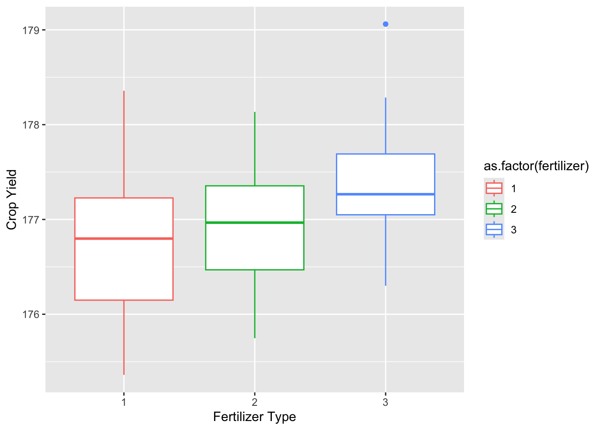
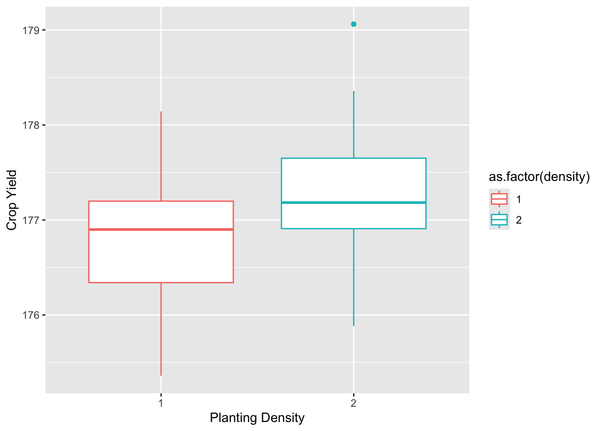
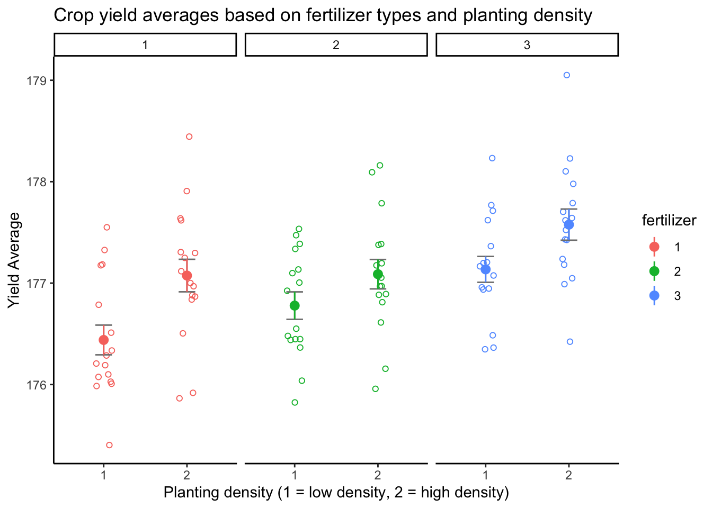

19 Two-Way ANOVA
19.1 Two-way ANOVA
A two-way ANOVA is used to estimate how the mean of a quantitative variable changes according to the levels of two categorical variables.
It is used to determine how independent (grouping) variables, in combination, affect a dependent (response) variable.
Grouping variables are also called factors. Levels are the categories of each component.
19.2 How does it work?
The F test is used in ANOVA to determine statistical significance. The F test compares the variance in each group mean to the overall variance in the dependent variable because it is a group-wise comparison test.
When the variance is higher between groups than within the groups, the F test value will be greater, and therefore a higher likelihood that the difference observed is real and not due to chance.
There are three null hypotheses tested while doing a two-way ANOVA:
There is no difference between the group means at any level of the first independent variable.
There is no difference between the group means at any level of the second independent variable.
The effect of one independent variable does not depend on the effect of the other independent variable (also viewed as no interaction effect),
19.2.1 Assumptions needed
There are certain assumptions that must be considered before using a two-way ANOVA.
Homogenuity of variance: The variances for each group should be roughly equal.
Independence of observations: The observations in each group are independent of each other and the observations within groups were obtained by a random sample.
Normally distributed: The response variable is approximately normally distributed for each group.
Below we will see an example on how to test for these assumptions and how to conduct a two-way ANOVA test once we know they have been met.
19.3 Two-Way ANOVA Table
| Source of Variation | Sum of Squares | Degrees of freedom | Mean Squares | F value |
|---|---|---|---|---|
| Factor A | \(SS_A\) | \(k-1\) | \(MS_A\) | \(F_A\) |
| Factor B | \(SS_B\) | \(l-1\) | \(MS_B\) | \(F_B\) |
| Interaction AB | \(SS_{AB}\) | \((k-1)(l-1)\) | \(MS_{AB}\) | \(F_{AB}\) |
| Error | \(SS_E\) | \(kl(m-1)\) | \(MS_E\) | |
| Total | \(SS_T\) | \(klm-1\) |
Where
- \[ MS_E := \frac{SS_E}{kl(m-1)} \]
- \[ MS_A := \frac{SS_A}{k-1} \text{ and } F_A := \frac{MS_A}{MS_E} \]
- \[ MS_B := \frac{SS_B}{l-1} \text{ and } F_B := \frac{MS_B}{MS_E} \]
- \[ MS_{AB} := \frac{SS_{AB}}{(k-1)(l-1)} \text{ and } F_{AB} := \frac{MS_{AB}}{MS_E} \]
We explain these components as:
- \(SS_A\): Factor \(A\) main effect sums of squares with associated df \(k-1\)
- \(SS_B\): Factor \(B\) main effect sums of squares, with associated df \(l-1\)
- \(SS_{AB}\): interaction sum of squares, with associated df \((k-1)(l-1)\)
- \(SS_E\): error sum of squares with associated df \(kl(m-1)\)
- \(SS_T\): Total sums of squares, associated with df \(klm-1\)
19.3.1 Example
For this example, an agricultural crop yield dataset was sourced from Scribbr.
The dataset contains:
- Type of fertilizer (1,2,3)
- Planting density (1 = low, 2 = high)
- Block number in the field (1,2,3,4)
This two-way ANOVA will examine whether the type of fertilizer and planting density (independent variables) have an effect on the average crop yield (dependent variable).
19.3.1.1 Loading Libraries and Data
19.3.1.2 Data Exploration
# show first six rows of the dataset
head(crop_data_df)# A tibble: 6 × 4
density block fertilizer yield
<dbl> <dbl> <dbl> <dbl>
1 1 1 1 177.
2 2 2 1 178.
3 1 3 1 176.
4 2 4 1 178.
5 1 1 1 177.
6 2 2 1 177.# overview of summary statistics
summary(crop_data_df) density block fertilizer yield
Min. :1.0 Min. :1.00 Min. :1 Min. :175.4
1st Qu.:1.0 1st Qu.:1.75 1st Qu.:1 1st Qu.:176.5
Median :1.5 Median :2.50 Median :2 Median :177.1
Mean :1.5 Mean :2.50 Mean :2 Mean :177.0
3rd Qu.:2.0 3rd Qu.:3.25 3rd Qu.:3 3rd Qu.:177.4
Max. :2.0 Max. :4.00 Max. :3 Max. :179.1 19.3.1.2.1 Boxplots
plot_fertilizer <-
ggplot(data = crop_data_df) +
aes(
x = as.factor(fertilizer),
y = yield,
color = as.factor(fertilizer)
) +
labs(
x = "Fertilizer Type",
y = "Crop Yield"
) +
geom_boxplot()
plot_fertilizer
plot_density <-
ggplot(data = crop_data_df) +
aes(
x = as.factor(density),
y = yield,
color = as.factor(density)
) +
labs(
x = "Planting Density",
y = "Crop Yield"
) +
geom_boxplot()
plot_density
19.3.1.3 Null
H01: There is no statistical difference in average yield for any fertilizer type
H02: There is no difference in average yield between either planting density
H03: The effect of fertilizer type on average yield is not dependent on the effect of planting density - no interaction effect
19.3.1.4 Alternative
H11: There is a difference in the average yield for fertilizer types
H12: There is a difference in the average yield based on planting density
H13: There is an interaction effect between planting density and fertilizer type average yield
19.3.1.5 Performing the two-way ANOVA
First we want to test without interaction between the two independent variables for our first model. The code below is
# converting into a factor for post-hoc assessment
crop_data_df$fertilizer <- as.factor(crop_data_df$fertilizer)
crop_data_df$density <- as.factor(crop_data_df$density)
# performing the two-way ANOVA
two_way <-
aov(yield ~ fertilizer + density, data = crop_data_df)
# creating a tidy table using gt
table_1 <- two_way %>%
tidy() %>%
gt()
# customizing table
table_1 |>
tab_header(
title = "ANOVA Results",
subtitle = "Two-way ANOVA for yield"
)| ANOVA Results | |||||
|---|---|---|---|---|---|
| Two-way ANOVA for yield | |||||
| term | df | sumsq | meansq | statistic | p.value |
| fertilizer | 2 | 6.068047 | 3.0340233 | 9.073123 | 0.0002532992 |
| density | 1 | 5.121681 | 5.1216812 | 15.316179 | 0.0001741418 |
| Residuals | 92 | 30.764505 | 0.3343968 | NA | NA |
We also want to test a model that shows interaction between the two independent variables.
# performing the two-way ANOVA with interaction
interaction <-
aov(yield ~ fertilizer * density, data = crop_data_df)
# creating a tidy table using gt
table_int <- interaction %>%
tidy() %>%
gt()
# customizing table
table_int |>
tab_header(
title = "ANOVA Results",
subtitle = "Two-way ANOVA for yield with interaction term"
)| ANOVA Results | |||||
|---|---|---|---|---|---|
| Two-way ANOVA for yield with interaction term | |||||
| term | df | sumsq | meansq | statistic | p.value |
| fertilizer | 2 | 6.0680466 | 3.0340233 | 9.0010522 | 0.0002731890 |
| density | 1 | 5.1216812 | 5.1216812 | 15.1945174 | 0.0001864075 |
| fertilizer:density | 2 | 0.4278183 | 0.2139091 | 0.6346053 | 0.5325000914 |
| Residuals | 90 | 30.3366866 | 0.3370743 | NA | NA |
The p-value for both independent variables are less than 0.05, therefore we reject the null hypotheses (H01 and H02).
The p value for the interaction term is greater than 0.05, hence we fail to reject the null hypothesis (H03). Hence not much variation can be explained by the interaction term.
19.3.1.6 Blocking Variable - 3rd Model
The crops were planted in across various blocks that may differ in other factors such as sunlight, moisture etc. This could possibly lead to confounding. Therefore it is important to control for the effect of differences between blocks by adding the third variable to our tests.
# performing two-way anova with interaction and blocking
blocking <-
aov(yield ~ fertilizer * density + block, data = crop_data_df)
# creating a tidy table using gt
table_block <- blocking %>%
tidy() %>%
gt()
# customizes gt table
table_block |>
tab_header(
title = "Two- way ANOVA Results",
subtitle = "with interaction term & blocking variable"
)| Two- way ANOVA Results | |||||
|---|---|---|---|---|---|
| with interaction term & blocking variable | |||||
| term | df | sumsq | meansq | statistic | p.value |
| fertilizer | 2 | 6.0680466 | 3.0340233 | 9.0459852 | 0.0002652607 |
| density | 1 | 5.1216812 | 5.1216812 | 15.2703680 | 0.0001813274 |
| block | 1 | 0.4860877 | 0.4860877 | 1.4492776 | 0.2318360383 |
| fertilizer:density | 2 | 0.4278183 | 0.2139091 | 0.6377732 | 0.5308657318 |
| Residuals | 89 | 29.8505990 | 0.3354000 | NA | NA |
For the block variable the sum of squares is low and the p value is greater than 0.05. Hence not much information is added to the model. The sum of square for both independent variables also remain unchanged.
19.3.1.7 Determining the Best Fit Model
The Akaike information criterion (AIC) can be used to determine the best model. AIC balances the variation explained by the number of parameters used to calculate the information value of each model. The lower the AIC value, the more information explained.
model_set <- list(two_way, interaction, blocking)
model_names <- c("two_way", "interaction", "blocking")
gt_fmt <-
aictab(model_set, modnames = model_names)
gt_print <-
gt(gt_fmt)
gt_print| Modnames | K | AICc | Delta_AICc | ModelLik | AICcWt | LL | Cum.Wt |
|---|---|---|---|---|---|---|---|
| two_way | 5 | 173.8562 | 0.000000 | 1.0000000 | 0.75476252 | -81.59474 | 0.7547625 |
| interaction | 7 | 177.1178 | 3.261693 | 0.1957638 | 0.14775516 | -80.92256 | 0.9025177 |
| blocking | 8 | 177.9496 | 4.093464 | 0.1291563 | 0.09748232 | -80.14722 | 1.0000000 |
As shown in this table, the two_way model is the best fit for our crop data analysis.
19.3.2 Checking for homoscedasticity
The output of the residual means shows no large outliers that could possibly skew the data. Hence we can assume equal variances. The Q-Q plot also depicts normality.
19.4 Post-hoc testing (Tukey HSD)
In order to determine how the levels differ from one another the Tukey’s Honestly-Significant-difference test can be used.
tukey_crop <- TukeyHSD(two_way)
tukey_crop %>%
tidy %>%
gt() %>%
tab_header(
title = "Tukey Multiple Comparisons of means",
subtitle = "for fertilizer & density"
)| Tukey Multiple Comparisons of means | ||||||
|---|---|---|---|---|---|---|
| for fertilizer & density | ||||||
| term | contrast | null.value | estimate | conf.low | conf.high | adj.p.value |
| fertilizer | 2-1 | 0 | 0.1761687 | -0.16822506 | 0.5205625 | 0.4452958212 |
| fertilizer | 3-1 | 0 | 0.5991256 | 0.25473179 | 0.9435194 | 0.0002218678 |
| fertilizer | 3-2 | 0 | 0.4229569 | 0.07856306 | 0.7673506 | 0.0119381379 |
| density | 2-1 | 0 | 0.4619560 | 0.22752045 | 0.6963916 | 0.0001741423 |
This table shows of pairwise differences between each level in the independent variables. Comparisons with p values less than 0.05 are termed significant;
- fertilizer types 1 and 3
- fertilizer types 2 and 3
- planting density groups (binary)
- Only the fertilizer comparison of type 1 & 2 confidence interval includes 0; no significant statistical difference
19.4.1 Summary Chart of Crop yield data
anova_plot <-
ggplot(crop_data_df,
aes(
x = density,
y = yield,
group = fertilizer,
color = fertilizer
)
) +
geom_point(
cex = 1.5,
pch = 1.0,
position = position_jitter(w = 0.1, h = 0.1)
)
anova_plot <- anova_plot +
stat_summary(fun.data = 'mean_se', geom = 'errorbar', width = 0.2, color = "grey50") +
stat_summary(fun.data = 'mean_se', geom = 'pointrange')
anova_plot <- anova_plot +
facet_wrap(~ fertilizer)
anova_plot <- anova_plot +
theme_classic() +
labs(title = "Crop yield averages based on fertilizer types and planting density",
x = "Planting density (1 = low density, 2 = high density)",
y = "Yield Average")
anova_plot
19.5 Conclusions
There is a statistically-significant difference in average crop yield by both the fertilizer type and planting density variables with F values of 9.018 (p < 0.001) and 15.316 (p < 0.001) respectively. The interaction between these two terms was not significant.
The Tukey post-hoc test showed significant pairwise differences between fertilizer types 1 & 3, and 2 & 3. It also depicted significant differences between the two types of planting densities (low & high).